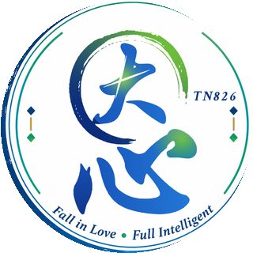

<!doctype html><html lang="zh-Hant"><meta charset="utf-8"><meta name="viewport" content="width=device-width,initial-scale=1"><title>南恩新人通關</title>
<link rel="icon" href="img/favicon.png"><style>body{margin:0;font-family:-apple-system,"PingFang TC","Noto Sans TC",sans-serif;background:#071a3d linear-gradient(180deg,#0a2a63 0%,#061634 100%) fixed;color:#fff;min-height:100vh}
body:before{content:"";position:fixed;right:-8vmin;bottom:-8vmin;width:60vmin;height:60vmin;background:url(img/badge.png) center/contain no-repeat;opacity:.06;pointer-events:none;z-index:0}
.banner{display:block;width:100%;height:auto;border-bottom:3px solid #d4a63a}
header{padding:18px 20px 6px;max-width:960px;margin:auto;display:flex;align-items:center;gap:14px;position:relative}
header img{width:56px;height:56px;border-radius:50%;box-shadow:0 0 0 2px #d4a63a}
h1{margin:0;font-size:24px;color:#f3d27a}header p{margin:4px 0 0;color:#cfe0ff;font-size:14px}
main{max-width:960px;margin:auto;padding:16px;display:grid;gap:14px;grid-template-columns:repeat(auto-fill,minmax(260px,1fr));position:relative}
.card{background:rgba(255,255,255,.06);border:1px solid rgba(212,166,58,.35);border-left:4px solid #3fb56b;border-radius:12px;padding:18px;backdrop-filter:blur(2px)}
.n{color:#5fd48a;font-size:13px;font-weight:700;letter-spacing:.05em}h2{margin:4px 0;font-size:19px;color:#fff}.m{color:#b9c8e6;font-size:13px;margin:0 0 12px}
.bs{display:flex;gap:8px;flex-wrap:wrap}.btn{flex:1;text-align:center;padding:10px;border-radius:8px;background:linear-gradient(180deg,#f0cf6e,#c9952c);color:#0a2147;font-weight:700;text-decoration:none;font-size:14px}
.btn:hover{filter:brightness(1.08)}.off{background:rgba(255,255,255,.1);color:#9fb0cf;font-weight:400}footer{text-align:center;color:#8fa3c8;font-size:12px;padding:20px;position:relative}</style>
<header><div><h1>南恩新人通關</h1><p>九大關卡・每關三次演練・通過由主管簽核</p></div></header><main><div class="card"><div class="n">第 1 關</div><h2>MS問卷</h2><p class="m">3 次演練・主管簽核</p><div class="bs"><a class="btn" href="pdf/ms-script.pdf" download>話術稿 PDF</a><span class="btn off">檢核點 PDF・即將推出</span></div></div><div class="card"><div class="n">第 2 關</div><h2>理財三種方式</h2><p class="m">3 次演練・主管簽核</p><div class="bs"><span class="btn off">話術稿 PDF・即將推出</span><span class="btn off">檢核點 PDF・即將推出</span></div></div><div class="card"><div class="n">第 3 關</div><h2>28000</h2><p class="m">3 次演練・主管簽核</p><div class="bs"><span class="btn off">話術稿 PDF・即將推出</span><a class="btn" href="pdf/28000-check.pdf" download>檢核點 PDF</a></div></div><div class="card"><div class="n">第 4 關</div><h2>退休規劃</h2><p class="m">3 次演練・主管簽核</p><div class="bs"><a class="btn" href="pdf/retire-script.pdf" download>話術稿 PDF</a><a class="btn" href="pdf/retire-check.pdf" download>檢核點 PDF</a></div></div><div class="card"><div class="n">第 5 關</div><h2>10/20</h2><p class="m">3 次演練・主管簽核</p><div class="bs"><span class="btn off">話術稿 PDF・即將推出</span><a class="btn" href="pdf/1020-check.pdf" download>檢核點 PDF</a></div></div><div class="card"><div class="n">第 6 關</div><h2>醫療前中後·保單圈圈圈</h2><p class="m">3 次演練・主管簽核</p><div class="bs"><a class="btn" href="pdf/medical-script.pdf" download>話術稿 PDF</a><a class="btn" href="pdf/medical-check.pdf" download>檢核點 PDF</a></div></div><div class="card"><div class="n">第 7 關</div><h2>車險演練</h2><p class="m">3 次演練・主管簽核</p><div class="bs"><span class="btn off">話術稿 PDF・即將推出</span><span class="btn off">檢核點 PDF・即將推出</span></div></div><div class="card"><div class="n">第 8 關</div><h2>旅平卡演練</h2><p class="m">3 次演練・主管簽核</p><div class="bs"><span class="btn off">話術稿 PDF・即將推出</span><span class="btn off">檢核點 PDF・即將推出</span></div></div><div class="card"><div class="n">第 9 關</div><h2>理財金三角</h2><p class="m">3 次演練・主管簽核</p><div class="bs"><span class="btn off">話術稿 PDF・即將推出</span><span class="btn off">檢核點 PDF・即將推出</span></div></div></main><footer>內部訓練資料</footer></html>